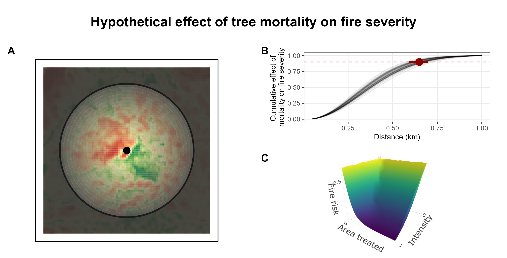

Approach
Using remote sensing data, I analyzed fire severity with respect to surrounding tree mortality, while controlling for relevant abiotic and biotic variables. Model development began on the KNP fire, but a larger goal was to expand the analysis to many fires across the Sierra Nevada. A distance decay kernel is embedded within a Bayesian model to estimate the landscape-level effect of tree mortality. I explored how treatment areas alter predicted fire severity with a focus on giant sequoia groves.

Statistical model
Fire severity \(y_i\) at observation \(i\) (\(i = 1...N\)) is categorized into 4 ordered levels–unchanged, low, moderate, and high–and is modeled with an ordered logit likelihood, where \(\phi_i\) controls the ordinal probabilities and \(\kappa\) estimates the internal cutpoints (equivalent to the intercepts of each ordered category). For more information on ordinal regressions in Stan, see this tutorial by Michael Betancourt here.
\[ \begin{aligned} y_i &\sim \text{ordered-logit}(\phi_i, \kappa) \\ \phi_i &= XB + (X_{DD} W)\beta + \text{interaction terms} \\ w_{0[m]} &= exp(-1/2*distance_m^2 / \delta^2) * area_m \\ W &= \dfrac{w_0}{\Sigma^M_m w_{0[m]} } \end{aligned} \]
The equation for \(\phi\) is where you’d include your typical environmental predictors, including a matrix of variables in \(X\) and vector of parameters \(B\). Landscape-level effects are estimated by weighting landscape variables, which have been discretized into \(M\) non-overlapping concentric rings, by a function that decreases with distance and standarized to sum to one (see equation \(W\); for more information consult Miguet et al. 2017 and Moll et al. 2020). Common distance weighting functions including negative exponential or negative quadratic exponential (as shown above) and can be assessed for predictive power using model comparison. The smoothing function assumes that the effect of a landscape variable is strongest close to the focal site and decays as a function of distance. In the equation above, \(\delta\) controls the length scale of the decay function and coursely describes the distance (in km) at which the effect is about half. Density of dead trees and live trees are both included as distance dependent effects. Distance dependent effects are included in the model as an array of matrices \(X_{DD}\) with N rows and M columns, where elements are the mean of the variable within each \(i\) focal site’s ring \(m\). The matrices \(X_{DD}\) are multipled by \(W\), the weighting function and the overall effects of the landscape varialbes are determined by \(\beta\).